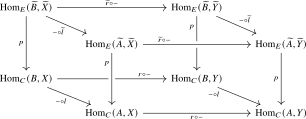

We begin with the notion of a factorization system on an \(\infty \)-category. The \(\infty \)-categorical formulation is due to Joyal and generalizes the familiar decomposition of maps of sets into a surjection followed by an injection. Factorization systems are an important categorical structure in their own right, so we develop their basic theory in some detail. They also provide exactly the mechanism needed later in this chapter: an \(\infty \)-operad already has cocartesian lifts over one class of a factorization system, and its envelope is obtained by freely adjoining lifts over the other class.
Orthogonality
Definition 17.1.1 (Orthogonality). Let \(C\) be an \(\infty \)-category. A morphism \(l \colon A \to B\) is said to be left orthogonal to a morphism \(r \colon X \to Y\), written \(l \perp r\), if the following square is a pullback square:
Equivalently, for every solid commutative square
the anima of dashed fillers making both triangles commute is contractible. We then also say that \(r\) is right orthogonal to \(l\).
Given a collection of morphisms \(S\), we denote by \(S^\perp \) the collection of all morphisms that are right orthogonal to every morphism in \(S\), and by \({}^\perp S\) the collection of those that are left orthogonal to every morphism in \(S\).
Observation 17.1.2. Every morphism \(f\colon X \to Y\) satisfying \(f \perp f\) is an isomorphism in \(C\): the unique dashed filler in the following diagram defines an inverse to \(f\):
These orthogonal classes satisfy a number of useful closure properties.
Proposition 17.1.3. Let \(S\) be a collection of morphisms in an \(\infty \)-category \(C\).
- (1)
-
The classes \(S^\perp \) and \({}^\perp S\) are closed under composition and contain all equivalences. In particular, they are encoded by wide subcategories of \(C\).
- (2)
-
The classes \(S^\perp \) and \({}^\perp S\) are closed under retracts.
- (3)
-
The class \(S^\perp \) is closed under base change (pullbacks).
- (4)
-
The class \({}^\perp S\) is closed under cobase change (pushouts).
- (5)
-
The class \(S^\perp \) has the left cancellation property: if \(g \circ f \in S^\perp \) and \(g \in S^\perp \), then \(f \in S^\perp \).
- (6)
-
The class \({}^\perp S\) has the right cancellation property: if \(g \circ f \in {}^\perp S\) and \(f \in {}^\perp S\), then \(g \in {}^\perp S\).
- (7)
-
If \(C\) admits small limits, the class \(S^\perp \) is closed under small limits in \(\Ar (C)\).
- (8)
-
If \(C\) admits small colimits, the class \({}^\perp S\) is closed under small colimits in \(\Ar (C)\).
Proof. These properties all follow from the definition of orthogonality in terms of hom animae. The proofs of (1) and (2) are left to the reader. For (3), consider a pullback square in \(C\) where \(r \in S^\perp \):
For any \(l \colon A \to B\) in \(S\), we must show \(l \perp r'\). This means showing that the left square in the diagram below is a pullback square of animae:
The right square is a pullback because \(\Hom _C(A,-)\) preserves pullbacks, so by the pasting lemma for pullback squares it remains to show that the outer rectangle is a pullback. But this holds as we may rewrite it as the pasting of the square obtained from the original pullback square by applying \(\Hom _C(B,-)\) and the pullback square exhibiting the orthogonality relation \(l \perp r\). The argument for (4) is dual.
For (5), consider morphisms \(f\colon X \to Y\) and \(g\colon Y \to Z\) in \(C\), and assume that \(g \circ f\) and \(g\) lie in \(S^{\perp }\). To show that \(f \in S^{\perp }\), let \(l\colon A \to B\) be a morphism in \(S\), and consider the following commutative diagram:
By assumption, the right and outer squares are pullback squares, hence by the pasting law so is the left square, as was to be shown. The argument for (6) is dual.
For (7), let \(f \colon I \to \Ar (C)\) be a diagram where each morphism \(f(i)\colon X(i) \to Y(i)\) lies in \(S^\perp \). Let \(r \colon \lim _i X(i) \to \lim _i Y(i)\) be the limit morphism. For any \(l \colon A \to B\) in \(S\), we have a chain of equivalences: \begin {align*} \Hom _C(B, \lim _i X(i)) &\simeq \lim _i \Hom _C(B, X(i)) \\ \Hom _C(A, \lim _i X(i)) &\simeq \lim _i \Hom _C(A, X(i)) \\ \Hom _C(B, \lim _i Y(i)) &\simeq \lim _i \Hom _C(B, Y(i)) \\ \Hom _C(A, \lim _i Y(i)) &\simeq \lim _i \Hom _C(A, Y(i)). \end {align*}
The square defining the orthogonality \(l \perp r\) is the limit of the squares defining \(l \perp f(i)\) for each \(i \in I\). Since limits of pullback squares are pullback squares, the claim follows. The proof for (8) is dual. □
Factorization systems
We now come to the central notion of this section.
Definition 17.1.4 (Factorization system). A factorization system on an \(\infty \)-category \(C\) consists of a pair of wide subcategories \((\Ll , \Rr )\) of \(C\) satisfying the following conditions:
- (1)
-
Orthogonality: Every morphism \(l \in \Ll \) is left orthogonal to every morphism \(r \in \Rr \).
- (2)
-
Factorization: Every morphism \(f\) in \(C\) admits a factorization \(f \simeq r \circ l\), where \(l \in \Ll \) and \(r \in \Rr \).
Three fundamental examples of factorization systems are developed in Chapterexercise 17.1, Enumi 2, Enumi 3 at the end of the chapter.
Proposition 17.1.5 ([Anel et al. (2022), Lemma 3.1.9]). If \((\Ll , \Rr )\) is a factorization system on \(C\), then \(\Ll = {}^\perp \Rr \) and \(\Rr = \Ll ^\perp \).
Proof. By symmetry, it suffices to prove \(\Rr = \Ll ^\perp \). The inclusion \(\Rr \subseteq \Ll ^\perp \) holds by definition. For the converse, let \(r \colon X \to Y\) be a morphism in \(\Ll ^\perp \). By the factorization property, we can write \(r \simeq r' \circ l\) for some \(l \colon X \to Z\) in \(\Ll \) and \(r' \colon Z \to Y\) in \(\Rr \).
Since \(l \in \Ll \) and \(r \in \Ll ^\perp \), we have \(l \perp r\). This means there is a contractible anima of lifts in the commutative square
Let \(d \colon Z \to X\) be such a lift. The commutativity of the top triangle gives \(d \circ l \simeq \mathrm {id}_X\). To see that also \(l \circ d \simeq \mathrm {id}_Z\), consider the following lifting problem for \(l \perp r'\):
It is clear that \(\id _Z\colon Z \to Z\) is a filler. But also the morphism \(l \circ d \colon Z \to Z\) is a filler, since \(r' \circ (l \circ d) \simeq (r' \circ l) \circ d \simeq r \circ d \simeq r'\) and \((l \circ d) \circ l \simeq l \circ (d \circ l) \simeq l\). By uniqueness of fillers, we must have \(l \circ d \simeq \mathrm {id}_Z\).
We conclude that \(l\) is an isomorphism, hence in \(\Rr \). Since \(r \simeq r' \circ l\) and \(\Rr \) is closed under composition, we conclude that also \(r \in \Rr \). □
Remark 17.1.6. By combining the previous proposition with Proposition 17.1.3, we conclude that the class \(\Rr \) is automatically closed under retracts, base change, and left cancellation. Similarly, \(\Ll \) is closed under retracts, cobase change, and right cancellation.
In the literature, the condition that \(\Ll \) and \(\Rr \) need to be closed under retracts is often taken as part of the definition of a factorization system, but the previous proposition shows this assumption is redundant.
In a factorization system, the factorization of a morphism is unique. To formulate a precise statement, we denote by \(\Fact _{\Ll ,\Rr }(C)\) the full subcategory of \(\Fun ([2],C)\) spanned by diagrams \(X \to Y \to Z\) where the morphism \(X \to Y\) lies in \(\Ll \) and the morphism \(Y \to Z\) lies in \(\Rr \). Restriction along the map \(d_1\colon [1] \to [2]\) provides a ‘composition functor’ \(- \circ - \colon \Fact _{\Ll ,\Rr }(C) \to \Ar (C)\).
Proposition 17.1.7 ([Lurie (2009), Proposition 5.2.8.17]). Let \(\Ll \) and \(\Rr \) be wide subcategories of an \(\infty \)-category \(C\). Then the following two conditions are equivalent:
- (1)
-
The pair \((\Ll ,\Rr )\) is a factorization system on \(C\);
- (2)
-
The composition functor \(- \circ - \colon \Fact _{\Ll ,\Rr }(C) \to \Ar (C)\) is an equivalence.
Proof. Assume first that \((\Ll ,\Rr )\) is a factorization system. The existence of factorizations implies that \(- \circ -\) is essentially surjective, so it remains to show it is also fully faithful. To this end, consider morphisms \(l\colon X \to Z\) and \(l'\colon X' \to Z'\) in \(\Ll \), and morphisms \(r\colon Z \to Y\) and \(r'\colon Z' \to Y'\) in \(\Rr \), and define \(u := r \circ l\) and \(u' := r' \circ l'\). We must show that the map \[ \Hom _{\Fact _{\Ll ,\Rr }(C)}((l,r),(l',r')) \to \Hom _{\Ar (C)}(u,u') \] induced by composition in \(C\) is an equivalence of animae. Equivalently, we may show that the fiber over every morphism \(u \to u'\) in \(\Ar (C)\) is contractible. Such a morphism consists of maps \(a\colon X \to X'\) and \(b\colon Y \to Y'\) in \(C\), together with a homotopy filling the outer rectangle in the following diagram:
Using the commutative-square and Segal axioms, we then compute that the fiber under consideration agrees with the fiber over \((l'a\colon X \to Z', br\colon Z \to Y')\) of the map \[ (l^*, r'_*)\colon \Hom _C(Z, Z') \to \Hom _C(X,Z') \times _{\Hom _C(X,Y')} \Hom _C(Z, Y'). \] But this map is an equivalence, since \(l \perp r'\).
The proof of the converse is similar: if the composition functor is an equivalence, then essential surjectivity provides the desired factorizations of morphisms in \(C\), while full faithfulness applied to the objects \((l\colon A \to B, \id _{B}\colon B \to B)\) and \((\id _X\colon X \to X, r\colon X \to Y)\) of \(\Fact _{\Ll ,\Rr }(C)\) provides the orthogonality condition. □
Corollary 17.1.8. Let \((\Ll ,\Rr )\) be a factorization system on \(C\). Then for every morphism \(f\) of \(C\), the fiber of \(\Fact _{\Ll ,\Rr }(C) \to \Ar (C)\) over \(f\) is contractible. □
Lemma 17.1.9. Let \((\Ll ,\Rr )\) be a factorization system on \(C\), and let \(\Ar _{\Rr }(C) \subseteq \Ar (C)\) denote the full subcategory spanned by the morphisms in \(\Rr \). Then the target functor \(t\colon \Ar _{\Rr }(C) \to C\) is a cocartesian fibration, with cocartesian morphisms given by those commutative squares
such that \(f \in \Ll \).
Proof. Given \(r\) and \(g\), factor the composite \(gr\) as \(r'f\) with \(f\in \Ll \) and \(r'\in \Rr \). This provides a lift of \(g\) of the displayed form. We show that every such lift is \(t\)-cocartesian.
Consider a third object \((r''\colon x''\to y'')\) in \(\Ar _{\Rr }(C)\). We must show that the square
is a pullback square. Fix a morphism \(g'\colon y'\to y''\) and a morphism \((h,g'g)\colon r\to r''\) over \(g'g\). The fiber in question is the anima of maps \(k\colon x'\to x''\) fitting into the diagram
Indeed, the two required triangles say precisely that \(kf\simeq h\) and \(r''k\simeq g'r'\). This filler anima is contractible because \(f\perp r''\). It follows that the displayed square of hom animae is a pullback, so the original morphism is \(t\)-cocartesian.
Conversely, every \(t\)-cocartesian lift of \(g\) with source \(r\) is isomorphic to one constructed by factoring \(gr\). Its top morphism is therefore the composite of a morphism in \(\Ll \) with an isomorphism, and hence lies in \(\Ll \). □
The inert-active factorization system on an \(\infty \)-operad
In Remark 14.1.12, we saw that every morphism in the total category \(\Oo ^{\otimes }\) of an \(\infty \)-operad factors uniquely as an inert morphism followed by an active morphism. We will now make this precise, by showing that the inert and active morphisms define a factorization system on \(\Oo ^{\otimes }\).
As our first step, we will show that every span category admits a canonical factorization system. Recall from Lemma 13.1.16 that for an adequate triple \((C, C_L, C_R)\), the \(\infty \)-category \(\Span _{L,R}(C)\) contains \(C_R\) and \(C_L\catop \) as wide subcategories. The morphisms in \(C_R\) are called forwards maps, while those in \(C_L\catop \) are called backwards maps.
Proposition 17.1.10 (The factorization system on a span category, [Haugseng et al. (2023), Proposition 4.9]). Let \((C, C_L, C_R)\) be an adequate triple. The pair \((\Ll , \Rr ) = (C_L\catop , C_R)\) forms a factorization system on \(\Span _{L,R}(C)\).
Proof. Any span \(X \xleftarrow {l} U \xrightarrow {r} Y\) can be factored as a backwards map followed by a forwards map: \[ X \xleftarrow {l} U \xrightarrow {\mathrm {id}_U} U \qquad \text {followed by} \qquad U \xleftarrow {\mathrm {id}_U} U \xrightarrow {r} Y. \] It remains to check orthogonality. Let \(l' \colon B \to A\) be a backwards map (given by \(l \in C_L\)) and \(r' \colon X \to Y\) be a forwards map (given by \(r \in C_R\)). We need to show that the square of hom animae
is a pullback. Using the formula for hom animae in a span category (see Lemma 13.1.13), this square is equivalent to
The square involving only \(C_L\) is degenerate, hence a pullback square, and similarly for the square involving \(C_R\). We conclude that this square is a pullback square, finishing the proof. □
Remark 17.1.11. The unique filler in a lifting problem in \(\Span _{L,R}(C)\) can be visualized directly. A commutative square with a backwards map on the left and a forwards map on the right corresponds to diagram of spans in \(C\) as follows:
Here the composite span is \(A \leftarrow Z' \rightarrow Y\), computed both as the composite of the spans \(A \xleftarrow {l} B \xrightarrow {\id _B} B\) and \(B \leftarrow Z''\to Y\), as well as the composite of the spans \(A \leftarrow Z \to X\) and \(X \xleftarrow {\id _X} X \xrightarrow {r} Y\). The unique filler span is then given by the span \(B \leftarrow Z' \rightarrow X\).
To obtain a factorization system on \(\Oo ^{\otimes }\) from the factorization system on \(\Span (\Fin )\), we will make use of the following result.
Lemma 17.1.12. Let \((\Ll ,\Rr )\) be a factorization system on an \(\infty \)-category \(C\), and let \(p\colon E \to C\) be a functor such that for every morphism \(l\colon A \to B\) in \(\Ll \) and every object \(\tilde {A} \in E_A\), there exists a \(p\)-cocartesian lift \(\widetilde {A} \to \widetilde {B}\) of \(l\). Then \(E\) admits a factorization system \((\widetilde {\Ll },\widetilde {\Rr })\), where \(\widetilde {\Ll }\) consists of the \(p\)-cocartesian morphisms over \(\Ll \) and \(\widetilde {\Rr }\) consists of morphisms over \(\Rr \).
Proof. Both classes define wide subcategories of \(E\): they contain all isomorphisms, and they are closed under composition because \(\Ll \) and \(\Rr \) are, and because composites of \(p\)-cocartesian morphisms are again \(p\)-cocartesian.
(1) For orthogonality, consider \(\tilde {l}\colon \widetilde {A} \to \widetilde {B}\) in \(\widetilde {\Ll }\) and \(\tilde {r}\colon \widetilde {X} \to \widetilde {Y}\) in \(\widetilde {\Rr }\). Let \(l\colon A \to B\) and \(r\colon X \to Y\) be their images in \(C\). We need to show that the top square in the following commutative cube is a pullback square:

Since \(\widetilde {l}\) is \(p\)-cocartesian, the left and right squares are pullback squares, and since \(l \perp r\) the bottom square is a pullback square. The claim thus follows from the pasting law of pullback squares.
(2) For factorization, consider a morphism \(\widetilde {f}\colon \widetilde {X} \to \widetilde {Z}\). We may factor its image \(X \to Z\) in \(C\) as a composite of a morphism \(l\colon X \to Y\) in \(\Ll \) and a morphism \(r\colon Y \to Z\) in \(\Rr \). We may then take \(\widetilde {l}\colon \widetilde {X} \to \widetilde {Y}\) to be a \(p\)-cocartesian lift of \(l\), which exists by assumption. The cocartesian property produces a unique morphism \(\widetilde {r}\colon \widetilde {Y} \to \widetilde {Z}\) over \(r\) through which \(\widetilde {f}\) factors, as desired. □
Corollary 17.1.13. Let \(\Oo \) be an \(\infty \)-operad. Then the inert and active morphisms define a factorization system on \(\Oo ^{\otimes }\).
Proof. This is an instance of Lemma 17.1.12 applied to the functor \(p_{\Oo }\colon \Oo ^{\otimes } \to \Span (\Fin )\), where we equip the target with the factorization system from Proposition 17.1.10. □
Combining Corollary 17.1.8, Corollary 17.1.13, we conclude that the anima of inert-active factorizations of every morphism in \(\Oo ^{\otimes }\) is contractible. This makes precise the uniqueness assertion from Remark 14.1.12.
Generated from the authoritative LaTeX source.